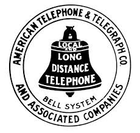

História da AT&T e suas dificuldades ao longo de sua trajetória
Resumo
A AT&T, uma renomada empresa de telecomunicações que ao longo de sua história, destacou-se por oferecer serviços de comunicação de alta qualidade, ao longo do tempo a empresa sofreu diversas dificuldades e teve que se adaptar para evoluir com as mudanças tecnológicas e às demandas dos consumidores.
AT&T
A AT&T, ou American Telephone and Telegraph Company, é uma empresa multinacional de
telecomunicações com sede nos
Estados Unidos.
Fundada em 1885, inicialmente sendo uma empresa de telefonia, veio a se tonar uma das maiores
provedoras de serviços
de comunicação do mundo, desempenhando um papel fundamental no desenvolvimento e avanço das telecomunicações.
A partir da venda das ações de Alexander grahamBell(A thebelltelephonyCompany) em os novos alteraram o nome da
empresa para AT&T(American
Telephoneand Telegraph Company).
Eles tinham como objetivo a primeira empresa telefônica de longa-
distância dos
Estados Unidos.
Como muitas empresas de telecomunicações, a AT&T enfrenta desafios em um ambiente de rápida evolução
tecnológica.
A convergência
entre telecomunicações e mídia, juntamente com a demanda crescente por serviços de dados e conectividade,
representa desafios e
oportunidades para a empresa.
1892 – Primeira linha de longa distância, entre Nova York e Chicago.
1915 – Primeira linha transcontinental.
1925 – Bell Labs, centro de pesquisa de desenvolvimento
A atual empresa tem suas origens no imigrante
escocês Alexander Graham Bell e na invenção do telefone.
A AT&T (American Telephoneand Telegraph Company)
foi
fundada por Alexander Graham Bell, o inventor do telefone, juntamente com seu sócio Gardiner Hubbard.
A
empresa
foi estabelecida em 1885 como uma subsidiária da Bell TelephoneCompany.
Além de Bell e Hubbard, Theodore Vail desempenhou um papel fundamental na história da AT&T.
Ele foi o
primeiro
presidente da AT&T e desempenhou um papel crucial na consolidação e expansão da empresa no início do século XX.
Vail também é conhecido por sua visão de um sistema de comunicações integrado e sua ênfase na importância do
serviço público.
Essas personalidades tiveram uma atitude crucial na expansão das empresas de
telecomunicação de
todo o mundo.
 A relação entre a AT&T e as leis
antitruste nos
Estados Unidos tem sido uma questão significativa ao longo da história da empresa.
Em um marco notável na década
de 1980, o Departamento de Justiça dos EUA processou a AT&T, resultando no "Acordo de Consentimento de
Modificação da AT&T" em 1982.
Isso levou à divisão da AT&T em várias "Baby Bells" para promover a concorrência.
Com as transformações na indústria de telecomunicações, a AT&T enfrentou outro caso antitruste em 2018 devido à
sua aquisição da Time Warner.
Apesar das alegações do Departamento de Justiça, o tribunal decidiu a favor da
AT&T, permitindo a conclusão da fusão.
A relação da AT&T com as leis antitruste destaca a complexidade
regulatória no setor, exigindo que as empresas naveguem para garantir conformidade e concorrência justa.
A relação entre a AT&T e as "Baby Bells" remonta ao resultado do processo antitruste iniciado pelo Departamento
de Justiça dos EUA na década de 1980.
Em 1982, a AT&T concordou com o "Acordo de Consentimento de Modificação da
AT&T".
Esse acordo levou à divisão da AT&T em várias empresas independentes, conhecidas como "Baby Bells".
As "Baby Bells"
As "Baby Bells" eram as companhias resultantes da divisão da AT&T e incluíam empresas como a
Ameritech, BellSouth, NYNEX, Pacific Telesis, Southwestern Bell, e US West, entre outras.
Cada uma dessas empresas foi designada para fornecer serviços de telefonia local em uma região específica dos Estados Unidos.
A principal razão por trás dessa divisão foi promover a concorrência no setor de telecomunicações, reduzindo o
monopólio que a AT&T detinha na época.
Cada "Baby Bell" tornou-se uma entidade separada, competindo entre si e com outras empresas no mercado de telecomunicações local.
Essa mudança teve um impacto significativo na
estrutura da indústria e influenciou o desenvolvimento posterior do setor nos Estados Unidos